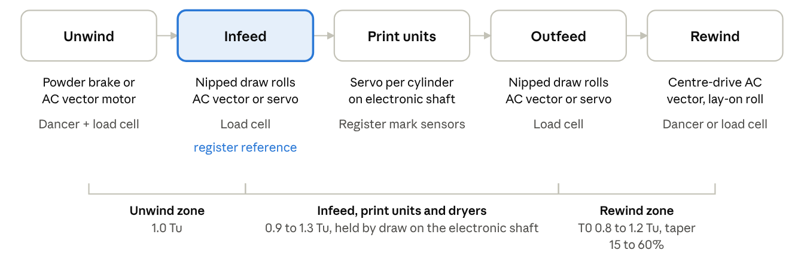

Abstract
In rotogravure printing, register accuracy, print quality and roll quality all depend on holding web tension steady in every zone from unwind to rewind. This paper traces how tension control evolved: from hand-set friction brakes and mechanical line shafts, through dancers, powder brakes and analog loops, to today's electronic-line-shaft presses with servo drives, load cells and digital multi-zone control. It then gives practical guideline tension values for common gravure substrates (BOPET, BOPP, CPP, polyethylene, nylon, shrink films, aluminium foil, paper and board), scaled by thickness and web width, with zone-wise ratios from unwind through infeed, print units and outfeed to rewind taper. The values are starting points to be refined on each press against register, wrinkle and roll-quality evidence.
Keywords: rotogravure, web tension, tension zones, dancer, load cell, electronic line shaft, taper tension, register control, flexible packaging
1. Introduction
Tension is the one process variable that touches every other variable on a gravure press. A rotogravure press prints from engraved cylinders, one colour per unit, with a dryer and chill roll after each unit. Because of the dryer, the web travels several metres between successive impression nips. Over that path, any change in tension changes the web's elastic stretch, and so the image printed by one unit lands early or late against the next.
The press is built as a chain of units — unwind, infeed, print units, outfeed and rewind — each driven or braked separately. [1] Each driven point bounds a tension zone, and the controller in each zone must reject its own disturbances without passing them along.
The stakes are practical:
- Register: gravure work is commonly held to about ±0.1 mm between colours; a tension swing of a few newtons on a stretchy film moves the image by more than that (Section 2).
- Print defects: low tension lets the web flutter, wrinkle and pick up ink out of place; high tension stretches thermoplastic films in hot dryers and causes neck-in, curl and repeat-length error.
- Roll quality and downstream yield: wrong rewind tension produces telescoping, starring, blocking, or gauge bands that spoil lamination and pouch making.
- Waste: most register waste is made during start-up, splicing, acceleration and deceleration — exactly the transients the tension system must ride through.
This paper sets out the physics briefly, follows the historical evolution of the hardware, describes current practice and the tension zones of a press, gives guideline values, and closes with commissioning and troubleshooting guidance.
2. Fundamentals of web tension
Web tension is the machine-direction force carried by the web; what damages or distorts the web is the stress and strain it produces. For a web of thickness h and width W running at tension T:
σ = T / (h W), ε = σ / E (1)
where σ is the stress, ε the elastic strain and E the machine-direction modulus. Three consequences follow.
- Tension scales with width and thickness. Guideline values are therefore quoted per unit width (N/m, kgf/cm, or PLI in US practice) and, for films, per unit thickness. A useful identity: 1 N/m per µm of thickness is exactly 1 N/mm² (1 MPa) of stress.
- Stretchy webs are tension-sensitive. The same tension change produces a strain change inversely proportional to E. Polyethylene (E ≈ 0.2 GPa) strains about twenty times more than polyester (E ≈ 4–5 GPa) for the same stress.
- Strain becomes register error. If tension between two print units changes, the web length held between them changes by L × Δε, and the second colour moves by roughly that amount until the zone settles.
Table 1 illustrates a 10 N tension step on a 1000 mm wide web with L = 4 m of web between units.
Table 1 — Register shift from a 10 N tension step (1000 mm web, 4 m span)
| Web | Area h × W (mm²) | Δσ (MPa) | E (GPa, approx.) | Δε | Image shift over 4 m |
|---|---|---|---|---|---|
| BOPET 12 µm | 12 | 0.83 | 4.5 | 1.9 × 10⁻⁴ | ≈ 0.7 mm |
| LDPE 50 µm | 50 | 0.20 | 0.2 | 1.0 × 10⁻³ | ≈ 4 mm |
Both shifts exceed a ±0.1 mm register tolerance, which is why register and tension controllers must work together, and why polyethylene is the hardest common gravure substrate to hold in register.
Table 2 — Units and conversions used in this paper
| Quantity | Conversion |
|---|---|
| Tension per width | 1 PLI (lbf/in) = 175.1 N/m; 1 kgf/cm = 981 N/m |
| Specific tension (films) | 1 PLI per mil = 6.895 N/m per µm = 6.895 MPa |
| Total tension | T (N) = specific tension (N/m per µm) × h (µm) × W (m); 1 kgf = 9.81 N |
| Shaft torque at a roll | M (N·m) = T (N) × D (m) / 2 |
2.1 Tension zones and disturbances
A tension zone is the web span between two points that set web speed or force: a braked or driven roll, or a nip. On a gravure press these are the unwind shaft, the infeed draw rolls, each impression nip, the outfeed draw rolls and the rewind shaft. Tension inside a zone is set by the speed difference across it (draw) and by the torque applied at its ends. The main disturbances are:
- Changing roll diameter: unwind brake torque must fall as the roll shrinks and rewind torque must rise as it grows. At 100 N, unwind torque falls from about 20 N·m at a 400 mm roll to about 5 N·m at 100 mm. [2]
- Roll eccentricity and out-of-round cores: a once-per-revolution tension ripple.
- Acceleration, deceleration and flying splices: inertia of rolls and dancers adds transient torque.
- Heat and moisture: thermoplastic films soften in dryers (typically 40–120 °C), and paper changes length with moisture. [2]
- Changing cylinder diameters: each job's engraved cylinders differ slightly in circumference, which changes the draw between units.
- In-line lamination of extra plies, which adds tension to the combined web. [9]
3. Historical evolution of tension control
Tension control moved from the operator's hand to closed-loop digital control in four broad stages, each driven by faster presses and thinner, stretchier substrates. The eras are approximate; adoption varied widely by country and press maker.
Table 3 — Evolution of tension control on gravure presses
| Era (approx.) | Tension method | Limitation that drove the next step |
|---|---|---|
| Up to the 1950s–60s | Main motor and line shaft driving all units; friction band or shoe brakes on the unwind set by hand; rewind through a slip clutch; infeed draw set through a stepless speed-change gear | Tension depended on operator feel and drifted as roll diameter changed |
| 1960s–1970s | Magnetic powder brakes and clutches; pneumatically loaded dancers; analog closed loops on dancer position or displacement-type tension detectors; diameter-compensated rewind | Analog drift, dancer inertia during splices, slow tuning |
| 1980s–1990s | DC drives on infeed, outfeed and rewind; powder brake + DC motor unwinds; PLCs; automatic register control with compensator rollers | Mechanical line shaft still couples all units; register correction depends on compensators |
| Late 1990s–today | Electronic line shaft with a servo or AC vector motor per print unit; digital multi-zone loops; load cells plus dancers; recipe storage | Remaining limits: interaction between zones and thermal effects in dryers |
3.1 The mechanical era
On early presses a single main motor drove every printing cylinder through a line shaft and bevel gears, so the units were synchronised mechanically. The unwind was held back by a simple brake — a leather band on a flywheel is a commonly cited example — and early unwinding brakes were adjusted by hand from the operator's feel. [2] Because brake torque was roughly fixed, tension rose as the unwind roll shrank.
The rewind was driven from the main drive through a slip clutch, overspeeding the web so the clutch always slipped. A fixed clutch torque gives tension that falls in inverse proportion to roll diameter. Patent literature on conventional presses notes that unwind braking and rewind advance were not governed by the main drive shaft, so that mid-roll the press became starved at the feed end and under-tensioned at the rewind. [12]
Infeed tension, the most important zone for register, was set by adjusting draw-roll speed through a stepless speed-change gear. The ratio drifted and every cylinder change needed careful readjustment, so results depended heavily on operator skill. [2]
3.2 Dancers, powder brakes and analog loops
The first real feedback came from the dancer roll: a roll on a pivoted arm loaded by dead weights, springs or an air cylinder. The dancer's load sets the tension, and its position tells the controller whether the brake is too strong or too weak. Magnetic particle (powder) brakes and clutches gave smooth, current-controlled torque at low speed and remain the cheapest unwind brake in use. Displacement-type tension detectors, whose bearings deflect microscopically under the web's wrap force, gave a direct tension signal.
Feedback replaced manual setting, and dancer-position feedback proved more effective than tension-signal feedback alone, especially during splicing and speed changes. [2] Rewinds gained diameter calculation, from a contact follower roller or from the ratio of line speed to spindle speed, which made taper tension possible. [3]
3.3 DC drives, PLCs and automatic register
DC motors on the infeed, outfeed and rewind, and powder brake plus DC motor combinations on the unwind, gave regenerative control over a wide speed and tension range: the powder brake carried high tension while the DC motor handled run-up and low tension. [2] Automatic register controllers read marks with photo-sensors and corrected register by moving compensator rollers that lengthen or shorten the web path between units. That correction itself disturbs tension, so tension and register loops had to be tuned together.
3.4 Electronic line shaft and digital control
The step change came when each print cylinder received its own motor, synchronised electronically instead of through a shaft. Valmet (Rotomec) stated that it took this step for gravure in 1996, and that almost all its gravure presses sold the following year were electronic line shaft models. [10] Each unit's cylinder phase can then be trimmed directly, and some makers now offer compensator-free register using feed-forward control. [11] AC vector motors replaced DC on the unwind and infeed, with less maintenance and a simpler explosion-proof design — important in solvent-ink areas. [2]
4. Current methods
A modern gravure press measures tension with load cells and dancers, actuates it with AC vector or servo motors, and closes a separate loop in each zone under a supervisory controller that also runs register.
4.1 Sensing
Table 4 — Tension sensing methods
| Sensor | How it measures | Strengths | Watch-outs |
|---|---|---|---|
| Load-cell idler (strain gauge or micro-displacement) | Bearing force from web wrap; tension = force ÷ wrap factor | Direct, fast, no moving mass; suits thin and stiff webs | Calibrate with a hanging weight along the real web path; wrap angle must not change with roll diameter |
| Dancer roll with position sensor | Air-loaded arm; tension set by air pressure, position read by potentiometer or encoder | Stores web; absorbs splices, eccentricity and acceleration transients | Inertia and pivot friction; regulator accuracy sets tension accuracy |
| Dancer + load cell | Dancer absorbs transients, load cell trims true tension | Best during splices and speed changes | More tuning; two loops to coordinate |
| Sensorless (calculated) | Tension inferred from motor torque, diameter and losses | No hardware on the web path | Friction and inertia must be compensated; less accurate at low tension |
Feeding back both dancer position and tension gives the best handling of splices and speed changes. [2]
4.2 Actuators
- Unwind: a magnetic powder brake on low-cost presses; a regenerative AC vector motor, often combined with a powder brake for high tension, on modern presses. Air brakes are not used on flexible packaging gravure presses because their low-torque behaviour is weaker than powder brakes. [2]
- Infeed and outfeed: AC vector or servo motors driving nipped draw rolls, each speed-trimmed by its tension loop.
- Print units: one servo or AC vector motor per engraved cylinder on an electronic line shaft; impression rollers loaded pneumatically.
- Rewind: a centre-driven AC vector motor, sometimes with a lay-on roller for gap or surface winding to exclude air on films.
4.3 Control architecture
- Speed master: the line-speed reference, tied to the print units, sets every drive's base speed.
- Draw zones: infeed and outfeed draw rolls hold tension by trimming their speed a fraction of a percent relative to the print units, using PI control on load-cell or dancer feedback.
- Torque zones: unwind and rewind compute torque feed-forward as set-point tension × radius, plus inertia compensation (J × angular acceleration) and friction compensation, then trim with feedback.
- Register loop: mark sensors after each unit measure longitudinal and lateral error, and the controller trims each cylinder's phase or moves a compensator. Because register trim changes web length, the register loop is tuned slower than the tension loops.
- Isolation: nipped infeed and outfeed draw rolls isolate the print section, so rewind taper does not reach the last print unit. [3]
4.4 Taper tension at the rewind
Rewind tension is reduced as the roll grows so that inner layers are not crushed and the roll does not telescope or block. With linear taper:
T(D) = T0 × [1 − (A/100) × (D − D0) / (Dmax − D0)] (2)
where T₀ is tension at the core diameter D₀ and A is the taper in percent. Taper of 30–50% is typical, rising to about 80% in some cases. [4] Modern controllers also allow hyperbolic or user-defined taper curves.
4.5 Supporting features now standard
- Recipe storage: tension and taper set points saved per substrate and job and recalled at make-ready.
- Stall tension and soft start: a reduced holding tension at standstill, ramped up before the press accelerates.
- Automatic splicing at full speed on unwind and rewind, with dancers absorbing the splice transient.
- Web preheating and chill rolls to stabilise film temperature, with paper over-dried to about 1–3% moisture so its dimensions hold. [2]
- Data logging: tension, register error and speed trended together, so the cause of a waste event can be traced.
5. Tension zones from unwind to rewind
The nipped infeed and outfeed draw rolls split the press into three groups of zones, so that unwind and rewind disturbances do not reach the print units (Figure 1).

- Unwind zone: the brake or motor holds the roll back against the infeed nip, cutting torque as the roll shrinks, absorbing eccentricity and riding through flying splices. A dancer is the most effective sensor here during splices.
- Infeed zone: the stability of infeed tension has the greatest influence on register precision, making the infeed the most important control unit on the press. [2] It is often paired with web preheating.
- Print units and dryers: between impression nips, tension is held by small speed differences (draw) between cylinders on the electronic line shaft. The web is softest inside the dryers, so thermoplastic films need the lowest tension and dryer temperature that still dries the ink.
- Outfeed zone: rewind tension strongly affects register of the last print unit; the outfeed roller blocks it and absorbs acceleration and splice transients. [4]
- Rewind zone: builds a roll that must survive storage and the next process (lamination, slitting, pouch making), using taper (2).
6. Guideline tension values
Set the unwind tension from the substrate's specific tension × thickness × width, then set every other zone as a ratio of it. The values are conservative starting points for solvent- or water-based gravure on flexible packaging presses, to be refined on each press (Section 7).
6.1 Basis of the values
Film and foil values are taken from the widely used Dover Flexo Electronics running-tension chart in lb/in per mil, [7] converted at 1 PLI/mil = 6.895 N/m per µm and expressed as a range: the lower bound suits heat-sensitive or thin gauges, the upper bound stiff, thick or wide webs. Paper and board values come from the same chart by basis weight and caliper.
The ranges sit at roughly 3–12% of each film's yield stress, within Walker's guidance to run at about 10–20% of the damaging condition, or a 5:1 to 10:1 safety factor against yield. [5] Walker also notes that about 80% of webs run between 0.3 and 3.0 PLI (about 50–525 N/m). For further reference, TAPPI TIP 0200-01 gives conveyance and winding tension guidelines. [8]
6.2 Specific unwind tension by substrate
Table 5 — Specific unwind tension for films and foil (multiply by thickness in µm to get N/m)
| Substrate | Typical thickness (µm) | N/m per µm (= MPa) | Notes |
|---|---|---|---|
| BOPET (polyester) | 10–36 | 3.5–5.2 | Stiff and stable; easiest to register |
| Metallised BOPET / BOPP | as base film | base film value − 10 to 20% | Limit strain so the metal layer does not crack |
| BOPP (plain, pearlised, heat-seal) | 15–40 | 1.4–2.4 | Softens in dryers; use lower end on pearlised and thin gauges |
| CPP | 20–50 | 1.0–1.7 | Low modulus; watch neck-in in hot dryers |
| LDPE / LLDPE | 30–100 | 0.5–1.2 | Most tension-sensitive; keep dryer temperature low |
| HDPE | 15–50 | 1.2–2.0 | Stiffer than LDPE; prone to curl |
| BOPA (nylon) | 12–25 | 1.5–2.5 | Hygroscopic; keep rolls wrapped until use |
| PVC / PETG shrink film | 30–50 | 0.6–1.2 | Low dryer temperature and low tension to avoid pre-shrink |
| Aluminium foil | 20–40 | 3.5–6.0 | Stable but tears at nicked edges; avoid tension spikes |
Table 6 — Unwind tension for paper and board (per metre of width)
| Substrate | Basis weight or caliper | Unwind tension (N/m) |
|---|---|---|
| Paper | about 25 g/m² | 70 |
| Paper | about 35 g/m² | 90 |
| Paper | about 50 g/m² | 130 |
| Paper | about 65 g/m² | 220 |
| Paper | about 100 g/m² | 350 |
| Paper | about 130 g/m² | 525 |
| Board | 200 µm (8 pt) | 525 |
| Board | 300 µm (12 pt) | 700 |
| Board | 380 µm (15 pt) | 790 |
| Board | 500 µm (20 pt) | 960 |
| Board | 760 µm (30 pt) | 1400 |
6.3 Effect of web width
Total tension rises in direct proportion to width. Table 7 applies Tables 5 and 6 to common gauges at three press widths.
Table 7 — Total unwind tension, N (kgf in brackets)
| Substrate and gauge | 600 mm web | 1000 mm web | 1300 mm web |
|---|---|---|---|
| BOPET 12 µm | 25–37 (2.6–3.8) | 42–62 (4.3–6.4) | 55–81 (5.6–8.3) |
| BOPET 23 µm | 48–72 (4.9–7.3) | 80–120 (8.2–12.2) | 105–155 (10.7–15.8) |
| Metallised BOPET 12 µm | 21–32 (2.1–3.2) | 35–53 (3.5–5.4) | 45–69 (4.6–7.0) |
| BOPP 20 µm | 17–29 (1.7–2.9) | 28–48 (2.9–4.9) | 36–62 (3.7–6.4) |
| BOPP 30 µm | 25–43 (2.6–4.4) | 42–72 (4.3–7.3) | 55–94 (5.6–9.5) |
| CPP 30 µm | 18–31 (1.8–3.1) | 30–51 (3.1–5.2) | 39–66 (4.0–6.8) |
| LDPE 50 µm | 15–36 (1.5–3.7) | 25–60 (2.5–6.1) | 32–78 (3.3–8.0) |
| LDPE 80 µm | 24–58 (2.4–5.9) | 40–96 (4.1–9.8) | 52–125 (5.3–12.7) |
| HDPE 25 µm | 18–30 (1.8–3.1) | 30–50 (3.1–5.1) | 39–65 (4.0–6.6) |
| BOPA 15 µm | 14–22 (1.4–2.3) | 22–38 (2.3–3.8) | 29–49 (3.0–5.0) |
| PVC / PETG shrink 40 µm | 14–29 (1.5–2.9) | 24–48 (2.4–4.9) | 31–62 (3.2–6.4) |
| Aluminium foil 25 µm | 52–90 (5.4–9.2) | 88–150 (8.9–15.3) | 114–195 (11.6–19.9) |
| Paper 50 g/m² | 66–96 (6.7–9.8) | 110–160 (11.2–16.3) | 143–208 (14.6–21.2) |
| Board 300 µm | 360–480 (37–49) | 600–800 (61–82) | 780–1040 (80–106) |
Width also matters beyond the total. Wide webs (above about 1200 mm) carry more cross-web gauge variation and baggy lanes, so run them near the middle of the range and rely on spreader rolls rather than extra tension to remove wrinkles. Narrow webs on well-aligned, low-drag rollers can run closer to the upper limit. [5]
6.4 Zone-wise ratios from unwind to rewind
Table 8 sets each zone relative to the unwind set point Tu. These ratios are the author's practical guideline compiled from common gravure practice, not a published standard, and assume nipped infeed and outfeed draw rolls.
Table 8 — Zone tension as a multiple of unwind tension Tu
| Zone | Stiff: BOPET, foil, paper, board | Medium: BOPP, HDPE, BOPA | Stretchy or heat-sensitive: LDPE, CPP, shrink | Purpose |
|---|---|---|---|---|
| Unwind | 1.0 | 1.0 | 1.0 | Hold back the roll; isolate eccentricity and splices |
| Infeed | 1.1–1.3 | 1.0–1.2 | 1.0–1.1 | Register reference; keep it the most stable zone |
| Print units and dryers | 1.1–1.3 | 1.0–1.2 | 0.9–1.0 | Hold register without stretching softened film |
| Outfeed | 1.1–1.3 | 1.0–1.2 | 0.9–1.1 | Isolate the print section from rewind taper |
| Rewind at core (T₀) | 1.0–1.2 | 0.9–1.1 | 0.8–1.0 | Start firm so the core does not slip or star |
| Rewind taper (A) | 15–30% | 30–50% | 35–60% | 30–50% typical, up to about 80% [4] |
6.5 Worked example
Consider a 1050 mm wide, 20 µm BOPP heat-seal film printed in eight colours and rewound from a 152 mm core to 800 mm diameter.
- Unwind: 1.4–2.4 × 20 = 28–48 N/m. Choosing the middle for a heat-sensitive film, about 36 N/m, gives Tu = 36 × 1.05 ≈ 38 N (3.9 kgf).
- Infeed: 1.1 × 38 ≈ 42 N.
- Print units and dryers: 1.0–1.1 × 38 = 38–42 N, with the lowest dryer temperature that dries the ink.
- Outfeed: about 1.1 × 38 ≈ 42 N.
- Rewind: T₀ = 38 N at the core with 40% taper, falling to 38 × 0.6 ≈ 23 N at 800 mm by (2).
- Rewind torque: 38 × 0.076 ≈ 2.9 N·m at the core and 23 × 0.40 ≈ 9.1 N·m at full diameter; the motor and gearbox must cover this range with margin.
If the printed repeat comes out short, tension is too high and should be lowered; if long, it should be raised slightly. [2]
7. Commissioning, tuning and troubleshooting
Most tension problems trace back to an uncalibrated sensor, a misaligned roller or a loop tuned faster than the register loop, not to a wrong set point.
7.1 Commissioning checklist
- Calibrate every load cell with a known weight hung over the real web path and wrap angle; record zero and span.
- Where possible, verify by hand: a spring balance pulled on the web until the unwind turns reads total tension directly. [6]
- Check roller parallelism and level along the full path; misalignment causes wrinkles that no tension setting cures.
- Check dancer regulator accuracy and pivot friction; the dancer should float mid-stroke at steady speed.
- Set inertia and friction compensation on unwind and rewind with an empty run-up before tuning feedback gains.
- Tune zones from the infeed outward: infeed, outfeed, unwind, rewind; tune the register loop last and slower.
- Save tested set points as recipes per substrate, gauge and width.
7.2 Symptom guide
Table 9 — Troubleshooting tension-related defects
| Symptom | Likely tension cause | First actions |
|---|---|---|
| Register drifts during acceleration or deceleration | Inertia compensation missing or wrong; infeed loop too slow | Set unwind and rewind inertia compensation; check infeed load-cell response |
| Once-per-revolution register wander | Eccentric unwind roll; dancer too stiff | Check roll runout; let the dancer absorb it; lower unwind gain |
| Register error at a splice | Dancer bottoms out; splice tension mismatch | Pre-match new-roll speed; check dancer stroke and loading |
| Printed repeat short | Tension too high for film modulus and temperature | Lower print-zone tension and dryer temperature |
| Printed repeat long; web flutters | Tension too low | Raise tension within the Table 5 range |
| Machine-direction wrinkles or creases | Uneven cross-web tension, baggy web, misaligned rollers | Align rollers; add spreader rolls; do not raise tension above range |
| Neck-in, curl or gauge bands on PE, CPP, shrink film | Tension too high in hot dryers | Use stretchy-web ratios (Table 8); reduce dryer temperature and air velocity |
| Cracked metal layer on metallised film | Strain above the coating's limit | Use metallised values (base film − 10 to 20%) |
| Telescoping or loose rewound roll | Rewind tension too low at core, or too much taper | Raise T₀; reduce taper; check lay-on roller |
| Starring, crushed core, blocking | Rewind too tight; too little taper | Increase taper; reduce T₀ |
| Last colour only out of register | Rewind disturbance reaching the print section | Close and control the outfeed nip; check outfeed loop |
8. Conclusion
Tension control in gravure has moved from operator feel to engineered, measured control, and the register gains of the modern press depend on it. The mechanical press tied every unit to one shaft and left tension to brakes, clutches and speed-change gears that drifted with roll diameter. Dancers, powder brakes and analog loops brought feedback; DC drives and PLCs brought isolation between zones; the electronic line shaft and AC vector drives brought per-unit control, recipes and compensator-free register.
The physics has not changed: tension sets strain, and strain sets register. Choosing the right tension therefore starts from the substrate's modulus, thickness and width. The guideline tables give starting values for common gravure substrates and zone ratios from unwind to rewind. Each press, ink system and dryer setting will move the best value, so the tables should be refined with calibrated sensors and logged register data, and proven set points saved as recipes.
Acknowledgement
The author acknowledges the use of Claude, a large language model by Anthropic, for literature search, drafting, unit conversions and figure preparation. The guideline values were compiled from the cited sources and should be validated on the press before production use.
References
- PSA Desk, The A, B, C of gravure printing machines: Basic specifications and unit structure, Packaging South Asia, 2016.
- PSA Desk, Basic specifications and unit structure (2), Packaging South Asia, 2 October 2016.
- PSA Desk, The A, B, C of gravure printing machines: Outfeed and rewinding control, Packaging South Asia, 2016.
- PSA Desk, Basic specifications and unit structure 7, Packaging South Asia, 2016.
- T. Walker, What is the right tension?, Paper, Film & Foil Converter (PFFC).
- Web tension 101, Paper, Film & Foil Converter (PFFC).
- Dover Flexo Electronics, Product guide: Typical running tensions of common web materials.
- TAPPI, Guidelines for web conveyance and winding tension levels, TIP 0200-01, 2022.
- Maxcess International, Tension control and inspection, 2022.
- 'Pit-stop' change-over and ES designs push speeds, Converting Today / NS Packaging.
- Orient Sogyo Co., Ltd., Sectional drive system.
- Multiple envelope with integrally formed and printed contents and return envelope, U.S. Patent 5,640,835.